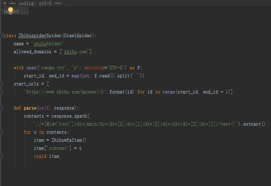
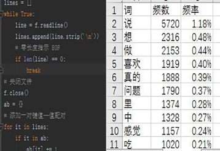

Start our social practice
出发去英华达公司

Give a lecture
讲述公司的历史沿革

Harvest a lot
参观结束，大家都收获满满
出发去英华达公司
讲述公司的历史沿革
参观结束，大家都收获满满
手机制作流程参观与爬虫项目实践
团队成员为计算机与信息学院的准大二学生，学习新知识，掌握新技能和接触社会提高实践能力同等重要，同时也需要了解未来所在专业的就职岗位以及工作内容，决定以团队形式利用这个假期，走出校门，走向社会，了解科技的最新动向，参观学习英华达（南京）科技有限公司，并做总结，随后完成该公司制定的课题，即给定几个网站作为种子，以这几个给定的网站作为种子，通过爬虫抓取一批网页（比如一万个，数量可以通过参数设定），统计这些网站中出现频率最高的top10热门词，以直方图的形式显示出来。
横坐标为词。将出现频率最高的10个的有意义词按出现频率降序表示出来，分别为：说、想、做、喜欢、真的、问题、里、中、感觉、吃。
纵坐标为有意义词top10出现的频数。将上述有意义词的频数表示出来，纵坐标轴以1000为区间进行分轴。
整体图表命名为“知乎词频TOP10”，以柱状图的形式向大家直观展示出结果。
以团队形式利用这个假期，走出校门，走向社会，了解科技的最新动向，参观学习英华达科技公司，并做总结，随后完成该公司制定的课题，即给定几个网站作为种子，以这几个给定的网站作为种子，通过爬虫抓取一批网页（比如一万个，数量可以通过参数设定），统计这些网站中出现频率最高的top10热门词，以直方图的形式显示出来。
项目流程图

爬虫模块
统计词频
用python中的matplotlib模块实现可视化输出。
将实践过程以及结果以网页的形式展现给大家。
使用github进行团队协作和版本管理。
本次社会实践于2018年7月13日圆满结束，为期10天，英华达公司实践实训调研团利用本次暑假走出校园，走向社会，用自己的行动践行“纸上得来终觉浅，绝知此事要躬行”，过程中虽偶遇问题，但大家齐心协力，解决困难后每位成员都有所收获，有所感悟，有所成长，相信未来的我们也会在接下来的大学生活和学习中不忘初心，砥砺前行！


{kind=link}
{kind=link}
{kind=link}
{kind=link}
{kind=link}
{kind=link}
{kind=link}
{kind=link}